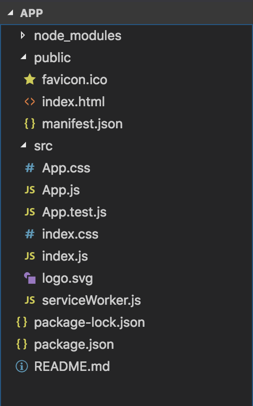
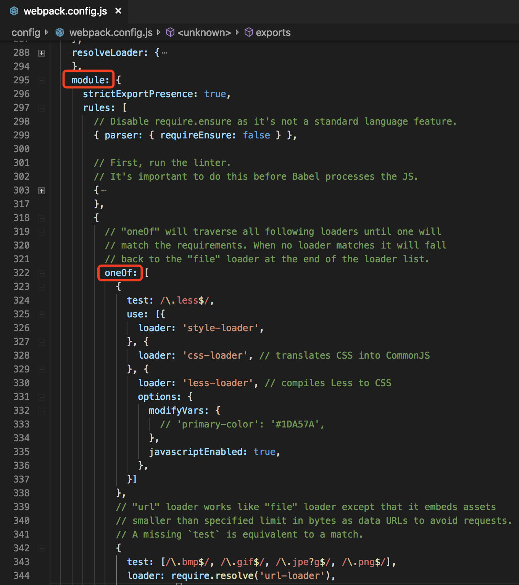
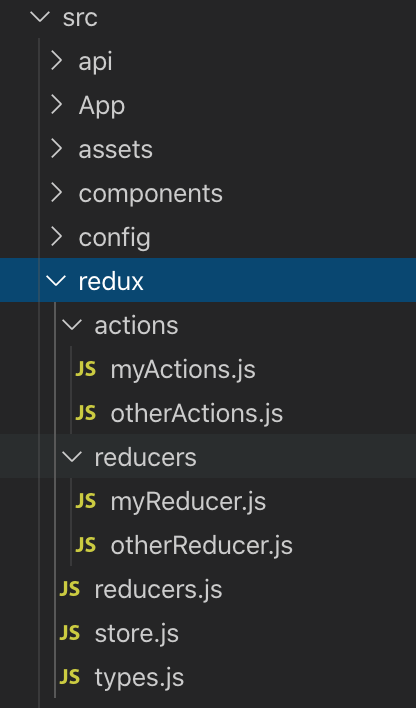

npm install -g create-react-appcreate-react-app app app：为该项目名称
或者跳过以上两步直接使用：
npx create-react-app app
cd app
npm start项目创建完成，目录如下：

npm install antd --save
或
cnpm install antd --savecnpm i antd -S没有权限请使用 sudo
使用 babel-plugin-import（推荐）。
npm run ejectNOTE: Create React App 2+ supports TypeScript, Sass, CSS Modules and more without ejecting: https://reactjs.org/blog/2018/10/01/create-react-app-v2.html
该操作为永久性，不可逆的。
npm install babel-plugin-import --save-dev
或
cnpm install babel-plugin-import --save-devcnpm i babel-plugin-import -Dbabel 配置如下：
"babel": {
"presets": [
"react-app"
],
"plugins": [
[
"import",
{
"libraryName": "antd",
"libraryDirectory": "es",
"style": true
}
]
]
}使用 babel-plugin-import 的 style 配置来引入样式，需要将配置值从 'style': 'css' 改为 'style': true，这样会引入 less 文件。
import { ConfigProvider } from 'antd';
import zh_CN from 'antd/lib/locale-provider/zh_CN';
import moment from 'moment';
import 'moment/locale/zh-cn';
moment.locale('zh-cn');语言列表请参照：Ant Design 国际化
另外需要使用 ConfigProvider 组件把 根组件 包裹起来：
<ConfigProvider locale={zhCN}>
<App />
</ConfigProvider>
npm install less less-loader --save-dev
或
cnpm install less less-loader --save-dev
cnpm i less less-loader -D在 config/webpack.config.js 中配置 less:
{
test: /\.less$/,
use: [{
loader: 'style-loader',
}, {
loader: 'css-loader', // translates CSS into CommonJS
}, {
loader: 'less-loader', // compiles Less to CSS
options: {
modifyVars: {
'primary-color': '#1DA57A',
'link-color': '#1DA57A',
'border-radius-base': '2px',
// or
'hack': `true; @import "your-less-file-path.less";`, // Override with less file
},
javascriptEnabled: true,
},
}]
}配置位置如下：

Ant Design 官网给出的可配置项：
@primary-color: #1890ff; // 全局主色
@link-color: #1890ff; // 链接色
@success-color: #52c41a; // 成功色
@warning-color: #faad14; // 警告色
@error-color: #f5222d; // 错误色
@font-size-base: 14px; // 主字号
@heading-color: rgba(0, 0, 0, 0.85); // 标题色
@text-color: rgba(0, 0, 0, 0.65); // 主文本色
@text-color-secondary : rgba(0, 0, 0, .45); // 次文本色
@disabled-color : rgba(0, 0, 0, .25); // 失效色
@border-radius-base: 4px; // 组件/浮层圆角
@border-color-base: #d9d9d9; // 边框色
@box-shadow-base: 0 2px 8px rgba(0, 0, 0, 0.15); // 浮层阴影
npm install normalize.css --save
或
cnpm install normalize.css --save
cnpm i normalize.css -Simport 'normalize.css';npm install axios qs --save
或
cnpm install axios qs --save
cnpm i axios qs -S 配置请求拦截器、响应拦截器：
service.js:
import axios from 'axios';
const service = axios.create({
// baseURL: window.location.origin,
timeout: 30000,
/*headers: {
'Cache-Control': 'no-cache'
}*/
});
/* 请求拦截器 */
service.interceptors.request.use((config) => {
// 在这里配置请求 config
return config;
}, (err) => {
console.error('请求发生了错误', err);
return Promise.reject(err);
});
/* 响应拦截器 */
service.interceptors.response.use((res) => {
// 在这里配置响应拦截器
return res;
}, (err) => {
console.error('响应发生了错误', err);
return Promise.reject(err);
});
export default service;配置API调用方法：
// 引入 axios 配置
import service from './service';
import qs from "qs";
// post 请求
export function apiPost(data = {}) {
return service({
url: "接口url",
method: 'post',
data: qs.stringify(data),
});
}
// get 请求
export function apiGet(params = {}) {
return service({
url: "接口url",
method: 'get',
params: params,
});
}
npm install http-proxy-middleware --save
或
cnpm i http-proxy-middleware -Sconst proxy = require('http-proxy-middleware');
module.exports = function(app) {
app.use(proxy('/api', { target: 'http://localhost:5000/' }));
};
npm install react-router-dom --save
或
cnpm install react-router-dom --save
cnpm i react-router-dom -S单独新建一个 router.js：( 或者在入口文件 index.js 中写路由视图)
import React from 'react';
import { BrowserRouter as Router, Route } from 'react-router-dom';
import YourComponent from 'your-component-path';
export default function () {
return (
<Router>
<Route path='/' component={YourComponent} />
</Router>
);
}然后在index.js里引用使用这个router.js：
import Router from './path/router.js';
export default function Index() {
return <Router />;
}在哪个文件引用 router.js ，看个人项目构建喜好了，我是把 redux 和 antd 的配置 在 index.js 中引用的，把 router.js 在 app.js 中引用的，然后再把 app.js 引入到 index.js 中。
可以看我 GitHub 的 mixins-demo
npm install redux redux-thunk react-redux --save
或
cnpm install redux redux-thunk react-redux --save
cnpm i redux redux-thunk react-redux -S在src目录下新建 redux 文件夹，作为配置 redux 的目录:

actions: 针对不同功能模块进行配置的 actions 文件放在此目录
reducers: 针对不同功能模块进行配置的 reducers 文件放在此目录
reducers.js: 把所有reducers 结合起来
store.js: 对 redux 的配置文件
types.js: 存放Actions中所需要的 type 属性值
各文件代码：
types.js:
export const MYTODO = 'MYTODO';
export const MYLIST = 'MYLIST';
export const OTHERTODO = 'OTHERTODO';
export const OTHERLIST = 'OTHERLIST';myReducer.js:
import { MYTODO, MYLIST } from '../types';
const initState = {
myTodos: [],
list: [],
// ...etc.
};
export default function (state = initState, action) {
switch (action.type) {
case MYTODO:
return {
...state,
myTodos: action.payload
};
case MYLIST:
return {
...state,
list: action.payload
};
default:
return state;
}
}myActions.js:
import { MYTODO, MYLIST } from "../types";
export const myTodos = (params) => (dispatch, getState) => {
// const { myState, otherState } = getState();
dispatch({
type: MYTODO,
payload: params
});
};
export const handleMyList = (params) => (dispatch, getState) => {
// const { myState, otherState } = getState();
dispatch({
type: MYLIST,
payload: params
});
};otherReducer.js:
import { OTHERTODO, OTHERLIST } from '../types';
const initState = {
otherTodos: [],
list: [],
// ...etc.
};
export default function (state = initState, action) {
switch (action.type) {
case OTHERTODO:
return {
...state,
otherTodos: action.payload
};
case OTHERLIST:
return {
...state,
list: action.payload
};
default:
return state;
}
}otherActions.js:
import { OTHERTODO, OTHERLIST } from "../types";
export const otherTodos = (params) => (dispatch, getState) => {
// const { myState, otherState } = getState();
dispatch({
type: OTHERTODO,
payload: params
});
};
export const handleOtherList = (params) => (dispatch, getState) => {
// const { myState, otherState } = getState();
dispatch({
type: OTHERLIST,
payload: params
});
};reducers.js:
import { combineReducers } from 'redux';
import myReducer from './reducers/myReducer';
import otherReducer from './reducers/otherReducer';
export default combineReducers({
myState: myReducer,
otherState: otherReducer,
});store.js:
import { createStore, applyMiddleware, compose } from 'redux';
import thunk from 'redux-thunk';
import reducers from './reducers';
const initState = {};
const middleware = [thunk];
const composeEnhancers =
typeof window === 'object' &&
window.__REDUX_DEVTOOLS_EXTENSION_COMPOSE__ ?
window.__REDUX_DEVTOOLS_EXTENSION_COMPOSE__({
// Specify extension’s options like name, actionsBlacklist, actionsCreators, serialize...
}) : compose;
const enhancer = composeEnhancers(
applyMiddleware(...middleware),
// other store enhancers if any
);
export const store = createStore(reducers, initState, enhancer);以上Redux基本配置完成，下面是调用方法：
import React, { useEffect } from 'react';
import PropTypes from 'prop-types';
import { connect } from 'react-redux';
import { myTodos, handleMyList } from './path/redux/actions/myActions';
function MyTodosComponent() {
useEffect(() => {
// 通过this.props 访问 state
console.log(this.props.myTodos);
console.log(this.props.list);
// 调用 actions
const todos = [
{
id: 1,
todo: 'say hello world'
}
];
this.props.myTodos(todos);
const list = [
{
id: 1,
text: 'test',
},
];
this.props.handleMyList(list);
}, []);
return (
<div>
{
this.props.todos.map((item, index) => {
return (
<div>id:{item.id}, todo:{item.todo}</div>
);
})
}
</div>
);
}
// 类型检查
MyTodosComponent.propTypes = {
myTodos: PropTypes.array.isRequired,
list: PropTypes.array.isRequired,
};
// 把redux中的state绑定到组件的props上
const mapStateToProps = (state) => {
const { myTodos, list } = state.myState;
return {
myTodos,
list,
};
};
// 把redux和组件结合起来,使组件能在props中访问到state和actions
export default connect(
mapStateToProps,
{
myTodos,
handleMyList,
},
)(MyTodosComponent);以上代码只是示例，只需要关注配置和使用方法即可
更多demo示例请看我的GitHub